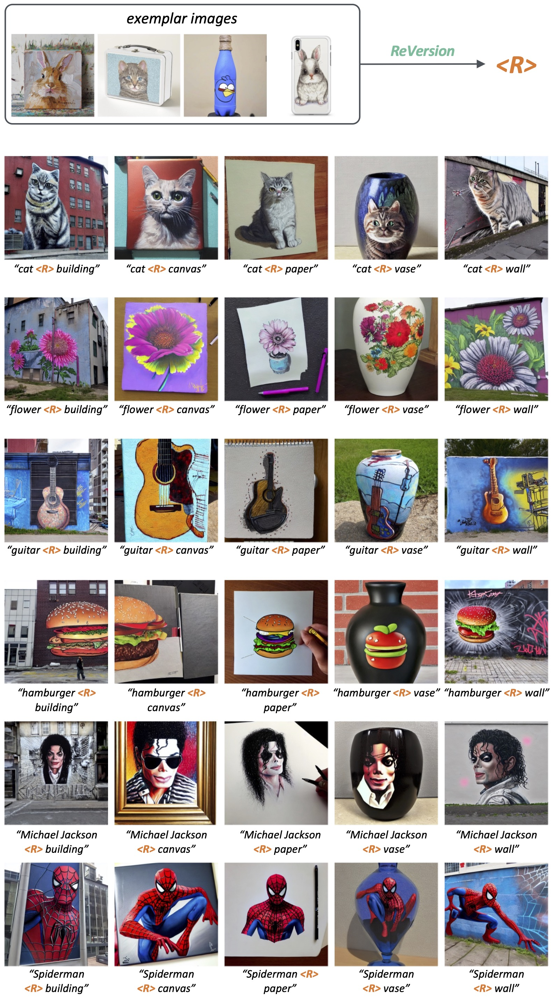

For the relation where one thing is painted on the surface of another thing.
Diffusion models gain increasing popularity for their generative capabilities. Recently, there have been surging needs to generate customized images by inverting diffusion models from exemplar images. However, existing inversion methods mainly focus on capturing object appearances. How to invert object relations, another important pillar in the visual world, remains unexplored. In this work, we propose ReVersion for the Relation Inversion task, which aims to learn a specific relation (represented as "relation prompt") from exemplar images. Specifically, we learn a relation prompt from a frozen pre-trained text-to-image diffusion model. The learned relation prompt can then be applied to generate relation-specific images with new objects, backgrounds, and styles.
Our key insight is the "preposition prior" - real-world relation prompts can be sparsely activated upon a set of basis prepositional words. Specifically, we propose a novel relation-steering contrastive learning scheme to impose two critical properties of the relation prompt: 1) The relation prompt should capture the interaction between objects, enforced by the preposition prior. 2) The relation prompt should be disentangled away from object appearances. We further devise relation-focal importance sampling to emphasize high-level interactions over low-level appearances (e.g., texture, color). To comprehensively evaluate this new task, we contribute ReVersion Benchmark, which provides various exemplar images with diverse relations. Extensive experiments validate the superiority of our approach over existing methods across a wide range of visual relations.
Given exemplar images and their entities' coarse descriptions, our ReVersion framework optimizes the relation prompt <R> to capture the relation that co-exists in all the exemplar images. During optmization, the relation-focal importance sampling strategy encourages <R> to focus on high-level relations, and the relation-steering contrastive Learning scheme induces the relation prompt <R> towards our preposition prior and away from entities or appearances. Upon optimization, <R> can be used as a word in new sentences to make novel entities interact via the relation in exemplar images.
For the relation where one thing is painted on the surface of another thing.
For the relation where one thing is carved by / made of another thing.
The relation inverted by ReVersion can be applied robustly to related entities in scenes with diverse backgrounds or styles.
If you find our work useful, please cite our paper:
@article{huang2023reversion,
title={{ReVersion}: Diffusion-Based Relation Inversion from Images},
author={Huang, Ziqi and Wu, Tianxing and Jiang, Yuming and Chan, Kelvin C.K. and Liu, Ziwei},
journal={arXiv preprint},
year={2023}
}